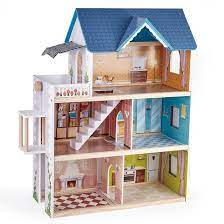

I made my first web-based work in 1995. The impetus for Fishes & Flying Things came from the material practices of fine art and book-making. The text evolved from an installation art exhibition I had on at the time. From this text, I created a small book-work which was meant to tell a circular story but when people got to the end they stopped reading because that’s the way books work. In the web version, the last page linked to the first; the story circled round and round. Of the installation, no physical evidence remains. Of the book-work, only one copy. The QuarkExpress file is stored on a 44 MB SyQuest cartridge which I still own, but the contents of which I can no longer access. The handmade website, on the other hand, is still online and it still works.
New paraphraph
